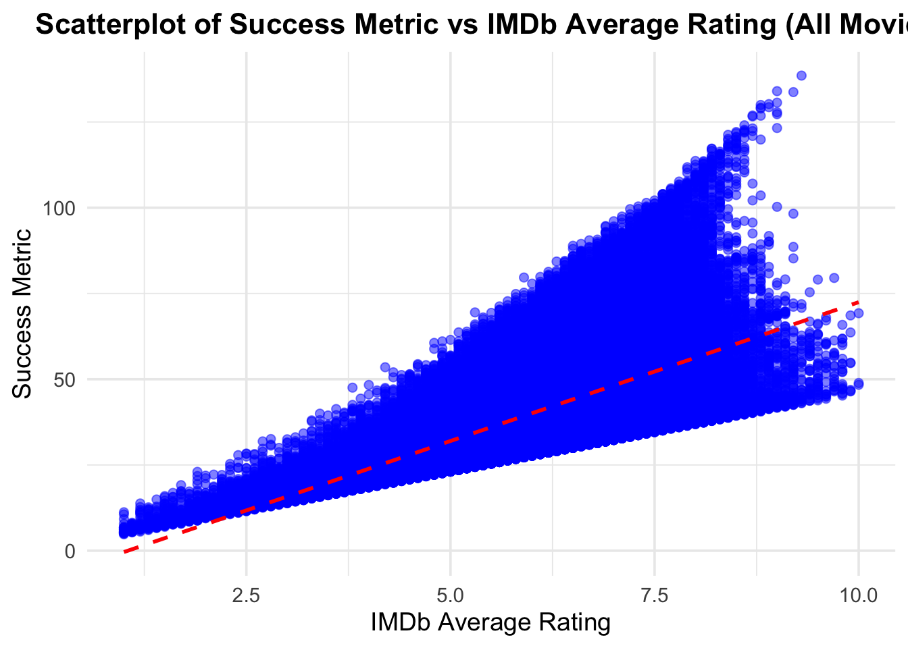
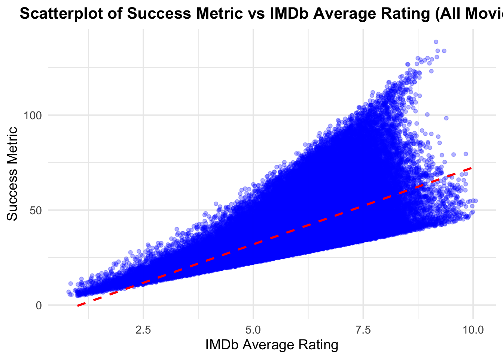
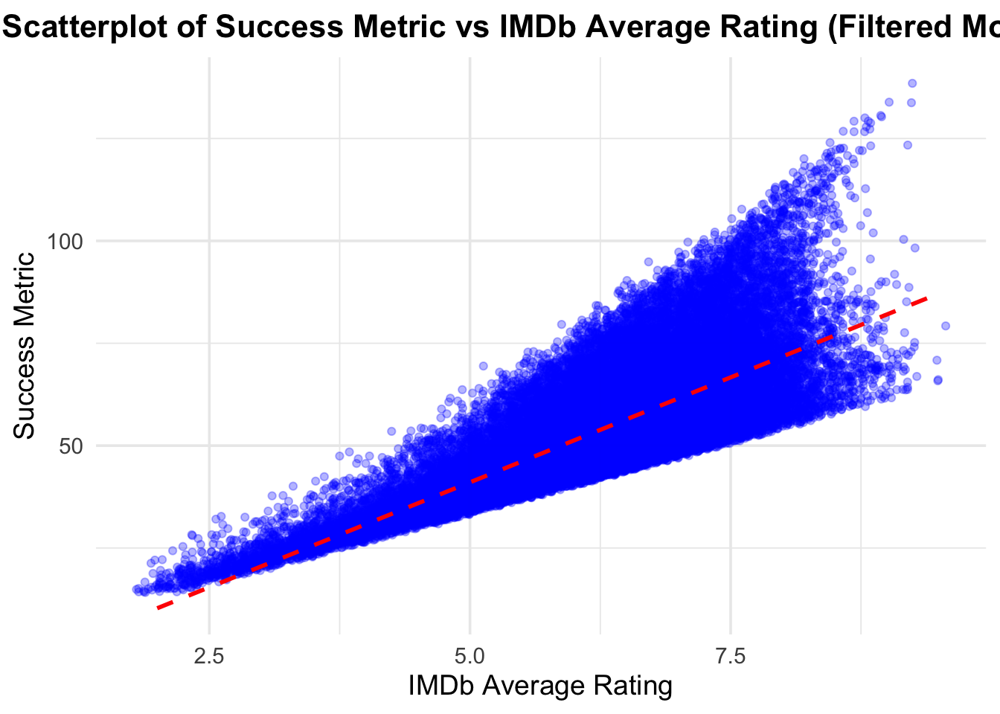
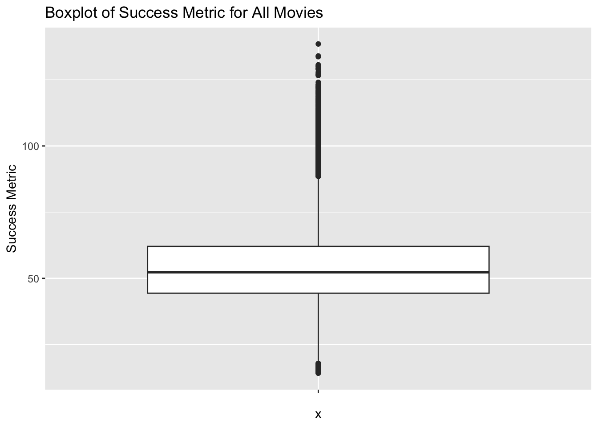
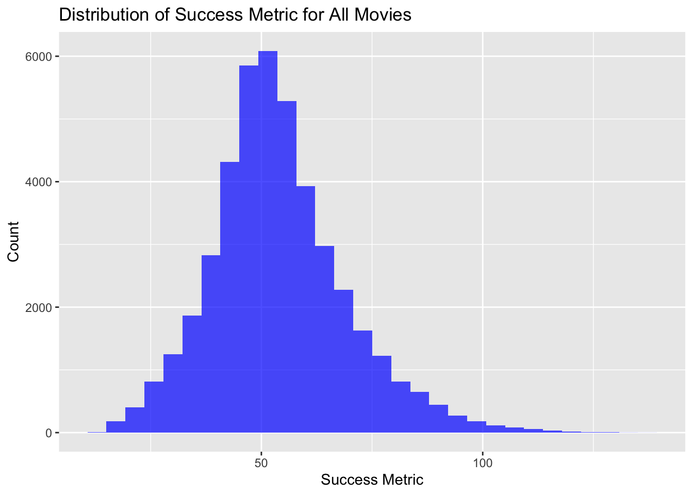
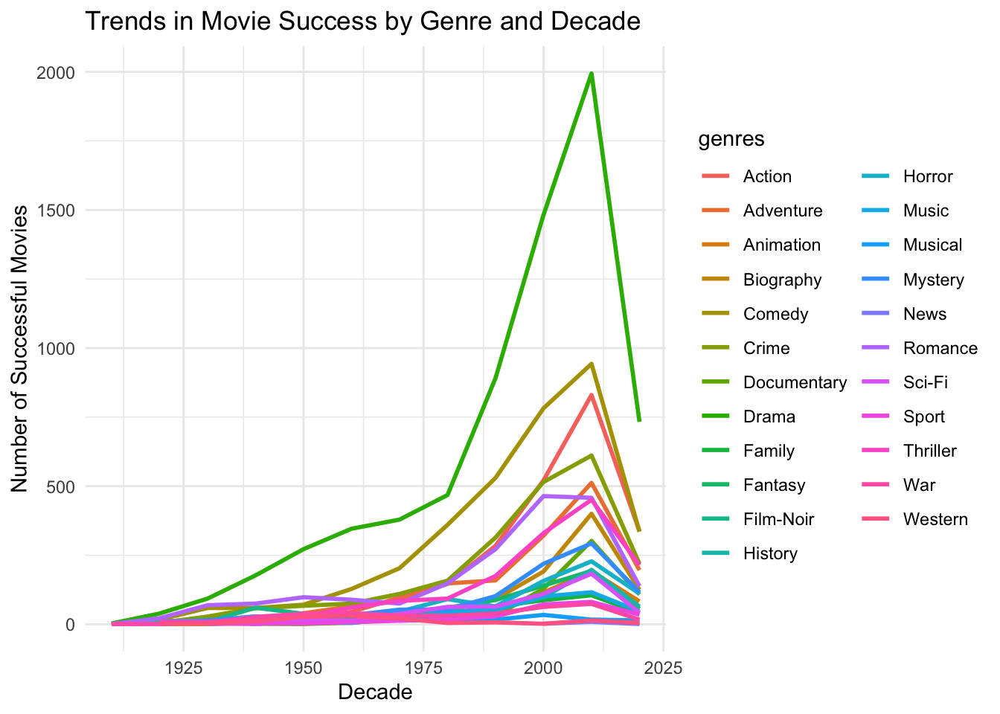
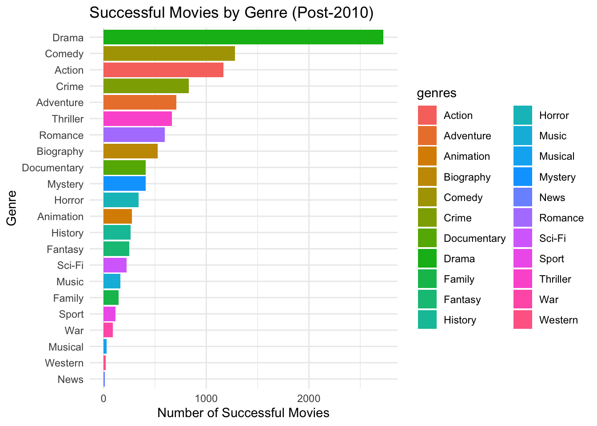

Abstract: The modeler of this project plays the role of a Hollywood development executive; the executive in charge of coming up with new movie ideas. The project aims to develop a set of data-driven ideas for new movies. The process involves diving into Hollywood history to: identify key characteristics of successful movies, identify successful filmmakers and actors, and examine some of Hollywood’s most famous flops.
Installed necessary packages and loaded libraries successfully.
Note: Due to technical difficulties, a pre-processed data set was loaded.
Code
get_imdb_file <-function(fname){# Set the base URL to the professor's GitHub BASE_URL <-"https://raw.githubusercontent.com/michaelweylandt/STA9750/main/miniprojects/mini02_preprocessed/" fname_ext <-paste0(fname, "_small.csv.zip") # Use the correct .csv.zip extension# Check if the file exists locally, if not download itif(!file.exists(fname_ext)){ FILE_URL <-paste0(BASE_URL, fname_ext)download.file(FILE_URL, destfile = fname_ext)message(paste("Downloaded:", fname_ext)) }# Read the .csv file directly from the .zip data <- readr::read_csv(fname_ext)return(as.data.frame(data))}# Load the pre-processed datasetsNAME_BASICS <-get_imdb_file("name_basics")TITLE_BASICS <-get_imdb_file("title_basics")TITLE_EPISODES <-get_imdb_file("title_episodes")TITLE_RATINGS <-get_imdb_file("title_ratings")TITLE_CREW <-get_imdb_file("title_crew")TITLE_PRINCIPALS <-get_imdb_file("title_principals")
Pre-Processed Data has been loaded successfully.
Initial Exploration
To better understand the structure of the data, we will use the glimpse function from the dplyr package to examine each table. This will provide insight into the number of columns, column names, and their respective data types for each dataset.
Most columns appear to be read in as character(string) vectors, but should be numeric. The “null” values are represented as \N, which R does not recognize as NA values.
Using the mutate and the as.numeric commands to change th types of columns.
Starting with the NAME_BASICS table - taking character columns and converting to numeric, where needed.
Moving on to the TITLE_BASICS table. For this one, we adjust two columns from character to numeric. One new fix we are making it taking the isAdult column and converting it from numeric (with values 0 or 1) and converting it to logical (TRUE/FALSE values). This way we will not have to remember how 0 and 1 are defined as TRUE/FALSE values.
The next table to clean would be the TITLE_RATINGS table. The three columns have the correct datatypes so this table is skipped.
The writers column in the TITLE_CREW table has several \N values which need to be replaced with NA. We will maintain the writer column’s type. This is done in the step below.
The last table left for cleaning is the TITLE_PRINCIPALS table. We will replace the \N values in the job and characters column with NA, while maintaining the columns’ data type.
# Creating summary tablesummary_table <-data.frame('Movies'= num_movies,'TV Series'= num_tv_series, 'TV Episodes'= num_tv_episodes)# Formatting summary table with gtsummary_gt <- summary_table |>gt() |>tab_header(title ="Total Movies, TV Series and Episodes" ) |>fmt_number(columns =everything(),decimals =0 )# Display the tablesummary_gt
Total Movies, TV Series and Episodes
Movies
TV.Series
TV.Episodes
131,662
29,789
3,007,178
The code below answers the question of who the oldest living person in our data set is. We first access the oldest living person from the NAME_BASICS dataset and then format the result into a table using gt. (Q2)
To access the oldest living person in the NAME_BASICS dataset, the code below filters to find the person with the maximum birthYear where deathYear is NA.
Next we aim to find the TV Episode with a perfect 10/10 rating and 200,000 IMDb ratings. To do so, we will need to access the TITLE_RATINGS, TITLE_BASICS, and TITLE_EPISODES tables. (Q3)
The code below filters the TITLE_RATINGS table for the episode with a 10/10 rating and at least 200,000 IMDb ratings.
It then joins this filtered set of the TITLE_RATINGS table with the TITLE_BASICS table to access the show’s title and series. “tconst” is the unique identifier for the episode’s title we use to join. We use an inner join, so only rows that match in both tables are included.
The second inner_join joins the result of the first join to TITLE_EPISODES. This is to be access the series name of the episode.
The final inner_join with TITLE_BASICS retrieves the series name by matching the “parentTconst” of the episode to “tconst” of the series in the TITLE_BASICS table.
We then use the select function to select only the relevant columns for our dataframe. We finally rename these columns to allow for more descriptive column names.
We find the TV episode with a perfect 10/10 rating and at least 200,000 IMDb ratings is the episode titled “Ozymandias” in the “Breaking Bad” series.
Moving on to learning more about the actor Mark Hamill. The code below finds the 4 most popular projects Mark Hamill worked on. The code filters the NAME_BASICS table to only Mark Hamill, then splits the knownForTitles columns into separate rows for each title, then joins to the TITLE_BASICS table to get project details. We then arrange the numVotes in descending order and take the top 4 using a slice function. We select the title and type for the final output of his projects. (Q4)
Code
mark_hamill_projects <- NAME_BASICS |>filter(primaryName =="Mark Hamill") |>separate_rows(knownForTitles, sep =",") |>inner_join(TITLE_BASICS, by =c("knownForTitles"="tconst")) |>select(primaryTitle, titleType)mark_hamill_projects_tb <- mark_hamill_projects |>gt() |>tab_header(title ="Mark Hamill's Most Known Projects" ) |>cols_label(primaryTitle ="Project Title",titleType ="Type" )mark_hamill_projects_tb
Mark Hamill's Most Known Projects
Project Title
Type
Star Wars: Episode IV - A New Hope
movie
Star Wars: Episode VIII - The Last Jedi
movie
Star Wars: Episode V - The Empire Strikes Back
movie
Star Wars: Episode VI - Return of the Jedi
movie
Next, we move on to answer the next question of: What TV series, with more than 12 episodes, has the highest average rating? (Q5)
First, we filter the TITLE_BASICS table to only get TV series:
Joining the filtered TITLE_EPISODES table with the TITLE_RATINGS table to calculate average rating by series:
Code
series_avg_ratings <- series_episodes_filtered |>inner_join(TITLE_RATINGS, by =c("parentTconst"="tconst")) |>group_by(parentTconst) |>summarize(avgRating =mean(averageRating, na.rm =TRUE), numEpisodes =first(numEpisodes)) |>arrange(desc(avgRating)) |>slice(1) #series with highest avg rating
Joining the series with the highest average rating back with TITLE_BASICS to access the series name:
Code
highest_rated_series <- series_avg_ratings |>inner_join(tv_series, by =c("parentTconst"="tconst")) |>select(primaryTitle, avgRating, numEpisodes)
Creating a table to display the results from the 4 steps of code above:
Code
highest_rated_series_tb <- highest_rated_series |>gt() |>tab_header(title ="Highest Rated TV Series with More Than 12 Episodes" ) |>cols_label(primaryTitle ="Series Title",avgRating ="Average Rating",numEpisodes ="Number of Episodes" ) |>fmt_number(columns =c(avgRating),decimals =1 )#displaying table highest_rated_series_tb
Highest Rated TV Series with More Than 12 Episodes
Series Title
Average Rating
Number of Episodes
Craft Games
9.7
318
Moving on to the final question of Task 2, regarding the TV series Happy Days (1974-1984) (Q6)
First, filtering to get only the “Happy Days” TV series from the TITLE_BASICS table.
For this question, a bar chart will be a great way to visualize our results. The below code creates a bar chart of average ratings by season, using the previously downloaded library ggplot2.
Code
ggplot(happy_days_avg_ratings, aes(x =as.factor(seasonNumber), y = avgRating)) +geom_bar(stat ="identity", fill ="steelblue") +labs(title ="Average Ratings by Season for Happy Days",x ="Season Number",y ="Average Rating") +theme_minimal()
Quantifying Success
The goal of the following section is to define a success metric for movies, given only IMDb ratings.
Task 3: Custom Success Metric
In creating a custom success metric, important metrics to consider are both the quality and popularity of a movie. Quality could be reflected by average IMDb rating and popularity could be reflected by the number of IMDb votes.
We can combine these two metric into a Success Metric formula as follows:
Success Metric = averageRating x log(numVotes)
Note: We use the logarithm of the number of votes to prevent movies with a large number of votes from skewing the results due to their popularity. The logarithm serves as a method to normalize the the scale of votes.
Creating success metric:
Code
#adding success metric to TITLE_RATINGS tableTITLE_RATINGS <- TITLE_RATINGS |>mutate(success_metric = averageRating *log1p(numVotes))# taking a peek at updated TITLE_RATINGS table glimpse(TITLE_RATINGS)
Using a bar chart to display the top 10 movies based on the custom success metric.
Code
#top 10 movies by success metrictop_10_movies <- TITLE_RATINGS |>inner_join(TITLE_BASICS, by ="tconst") |>filter(titleType =="movie") |>arrange(desc(success_metric)) |>slice(1:10) |>select(primaryTitle, averageRating, numVotes, success_metric)#bar chart to visualize top 10 moviesggplot(top_10_movies, aes(x =reorder(primaryTitle, success_metric), y = success_metric)) +geom_bar(stat ="identity", fill ="steelblue") +coord_flip() +labs(title ="Top 10 Movies by Success Metric",x ="Movie Title",y ="Success Metric" ) +theme_minimal()
Movies with High Votes but Low Success Scores
Using a scatter plot to display 5 movies with a large number of votes but poor success scores.
Code
#grabbing movies with high votes and low success scoreslow_success_movies <- TITLE_RATINGS |>filter(numVotes >100000) |>arrange(success_metric) |>slice(1:5) |>inner_join(TITLE_BASICS, by ="tconst") |>select(primaryTitle, averageRating, numVotes, success_metric)#creating scatter plot to visualize ggplot(low_success_movies, aes(x = numVotes, y = success_metric)) +geom_point(size=3, color="red") +geom_text(aes(label = primaryTitle), vjust =-1) +labs(title ="Movies with High Votes and Low Success Scores",x="Number of Votes",y="Success Metric") +theme_minimal()
Prestigious Actor Check
In this validation method, the modeler selects a prestigious actor and confirms they have many projects with high success scores based on the defined success metric.
Chosen Actor: Robert De Niro
The code below walks us through the steps taken to get to Robert De Niro’s projects and their ratings.
First, filter for Robert De Niro in the NAME_BASICS table.
Next, join with the TITLE_BASICS on the knownForTitles column, after splitting this column.
Then, join with TITLE_RATINGS to get ratings for the projects.
Code
de_niro_titles <- NAME_BASICS |>filter(primaryName =="Robert De Niro") |>separate_rows(knownForTitles, sep =",")print(de_niro_titles)
# A tibble: 4 × 6
nconst primaryName birthYear deathYear primaryProfession knownForTitles
<chr> <chr> <dbl> <dbl> <chr> <chr>
1 nm0000134 Robert De Niro 1943 NA actor,producer,di… tt0101540
2 nm0000134 Robert De Niro 1943 NA actor,producer,di… tt0081398
3 nm0000134 Robert De Niro 1943 NA actor,producer,di… tt0077416
4 nm0000134 Robert De Niro 1943 NA actor,producer,di… tt0075314
Code
de_niro_basic_join <- de_niro_titles |>inner_join(TITLE_BASICS, by =c("knownForTitles"="tconst"))glimpse(de_niro_basic_join)
#creating a table to display results abovede_niro_table <- de_niro_success |>gt() |>tab_header(title ="Robert De Niro's Top 4 Projects by Success Metric" ) |>fmt_number(columns =c(averageRating, numVotes, success_metric),decimals =2 )#printing tablede_niro_table
Robert De Niro's Top 4 Projects by Success Metric
primaryTitle
titleType
averageRating
numVotes
success_metric
Taxi Driver
movie
8.20
940,583.00
112.78
Raging Bull
movie
8.10
385,456.00
104.18
The Deer Hunter
movie
8.10
367,022.00
103.79
Cape Fear
movie
7.30
220,649.00
89.82
We use a scatterplot to display the averageRating vs Success Metric. The trend line is included to help highlight any linear relationship between these two variables.
Code
ggplot(de_niro_success, aes(x = averageRating, y = success_metric)) +geom_point(size =3, color ="blue") +# Scatter plot pointsgeom_smooth(method ="lm", color ="red", linetype ="dashed") +# Add a trend line (linear regression)labs(title ="Robert De Niro's Projects: IMDb Rating vs Success Metric",x ="IMDb Average Rating",y ="Success Metric" ) +theme_minimal()
We find Robert De Niro’s projects with the highest success rating also have a high success score, which further validates the chosen success metric.
Further Validation
In an effort to continue validating our chosen success metric, we explore the use of scatterplots to analyze the relationship between IMDb rating and success metric score.
Code
all_movies_success <- TITLE_RATINGS |>inner_join(TITLE_BASICS, by ="tconst") |>filter(titleType =="movie")ggplot(all_movies_success, aes(x = averageRating, y = success_metric)) +geom_point(color ="blue", size =2, alpha =0.5) +# All movie pointsgeom_smooth(method ="lm", color ="red", se =FALSE, linetype ="dashed") +# Trend linelabs(x ="IMDb Average Rating", y ="Success Metric", title ="Scatterplot of Success Metric vs IMDb Average Rating (All Movies)") +theme_minimal(base_size =14) +theme(plot.title =element_text(hjust =0.5, size =16, face ="bold"),axis.title.x =element_text(size =14),axis.title.y =element_text(size =14) )

Applying jittering to make the scatterplot slightly more readable.
Code
ggplot(all_movies_success, aes(x = averageRating, y = success_metric)) +geom_jitter(color ="blue", size =1.5, alpha =0.3, width =0.2, height =0.2) +# Jitter pointsgeom_smooth(method ="lm", color ="red", se =FALSE, linetype ="dashed") +# Trend linelabs(x ="IMDb Average Rating", y ="Success Metric", title ="Scatterplot of Success Metric vs IMDb Average Rating (All Movies)") +theme_minimal(base_size =14) +theme(plot.title =element_text(hjust =0.5, size =16, face ="bold"),axis.title.x =element_text(size =14),axis.title.y =element_text(size =14) )

Cleaning dataset to eliminate outliers, set a threshold for the minimum number of votes, and remove NAs. This allows for a smaller dataset to hopefully improve the visibility of our scatterplot.
Code
min_votes_threshold <-1000# You can adjust this value based on your needsall_movies_filtered <- all_movies_success |>filter(!is.na(averageRating) &!is.na(numVotes)) |># Remove rows with missing valuesfilter(numVotes >= min_votes_threshold) |># Remove movies with too few votesfilter(averageRating >=2& averageRating <=9.5) |># Remove movies with extreme ratingsfilter(!is.na(startYear) & genres !="\\N")ggplot(all_movies_filtered, aes(x = averageRating, y = success_metric)) +geom_jitter(color ="blue", size =1.5, alpha =0.3, width =0.2, height =0.2) +geom_smooth(method ="lm", color ="red", se =FALSE, linetype ="dashed") +labs(x ="IMDb Average Rating", y ="Success Metric", title ="Scatterplot of Success Metric vs IMDb Average Rating (Filtered Movies)") +theme_minimal(base_size =14) +theme(plot.title =element_text(hjust =0.5, size =16, face ="bold"),axis.title.x =element_text(size =14),axis.title.y =element_text(size =14) )

Given the volume of movies in our dataset, this only slightly improved the visibility of the scatterplot. In all three versions, the correlation is clear, movies with a higher average rating tend to have a higher success metric.
To further validate the custom success metric, we find the correlation coefficient between the IMDb average rating and the success metric. This measures the linear relationship between the two variables.
Code
correlation <-cor(all_movies_filtered$averageRating, all_movies_filtered$success_metric, use ="complete.obs")correlation_df <-data.frame(x ="IMDb Average Rating",y ="Success Metric",Correlation_Coefficient =sprintf("%.2f", correlation))correlation_table <- correlation_df |>gt() |>tab_header(title ="Correlation between IMDb Average Rating and Success Metric" )print(correlation_table)
Correlation between IMDb Average Rating and Success Metric
x
y
Correlation_Coefficient
IMDb Average Rating
Success Metric
0.78
The calculated correlation coefficient of 0.78 indicates a strong positive correlation between the IMDb average rating and the success metric. This translates to, movies with higher IMDb ratings also tend to score higher on the success metric, which is the trend we can visualize in the scatterplots above. This further supports and validates the use of the success metric.
Define a Numerical Threshold for Successful Project
Establishing a numerical threshold for the custom success metric requires a few steps.
1) Analyzing the distribution of the success metric
ggplot(all_movies_filtered, aes(x ="", y = success_metric)) +geom_boxplot() +labs(title ="Boxplot of Success Metric for All Movies",y ="Success Metric" )

The box plot helps visualize the distribution of the success metric and outliers above the upper quartile. A majoriy of the success metrics lie between 50 and 75, with outliers above 100.
Code
ggplot(all_movies_filtered, aes(x = success_metric)) +geom_histogram(bins =30, fill ="blue", alpha =0.7) +labs(title ="Distribution of Success Metric for All Movies",x ="Success Metric",y ="Count" )

The histogram of the success metric shows a right-skewed distribution, with the majority of movies clustered around a success metric of 50 to 75. Another observation includes the significant number of high-performing movies in the dataset, as we can see from the long tail extending towards higher success values.
Defining the Success Threshold
We can pick a threshold at the third quartile, Q3, given the top 25% of movies fall above this threshold. By setting this threshold, we ensure only movies that are significantly better than the median are classified as “solid” or better.
Our success threshold chosen is our Q3 value of 62.06.
Examining Success by Genre and Decade
Task 4: Trends in Success Over Time
The analysis may be broken down by decades and genres.
We start with categorizing movies by decade. The code below creates a new column that groups movies by the decade they were released, through the use of the startYear column. We add a decade column through the use of the mutate function.
Let’s take a look at few different views of our trends.
Line Plot showing Success Over Time by Genre:
Each line in the plot below represents the number of successful movies for a given genre in each decade, as defined by the custom success metric, filtered above the 62.05 threshold, showing only “successful” movies.
Code
ggplot(success_by_genre_decade, aes(x = decade, y = success_count, color = genres)) +geom_line(size =1) +labs(title ="Trends in Movie Success by Genre and Decade",x ="Decade", y ="Number of Successful Movies") +theme_minimal()

Observations on the above:
Documentaries appear to dominate the successful movie space, while seeing a sharp rise from the 1980s to early 2000’s, and then a significant decline to follow
Notable increase in biography popularity, with a peak in the early 2000’s
Success in the early 2000’s, as we see most of the genres peak around 2010
Bar Chart showing Success by Genre since 2010:
Code
success_2010s <- success_by_genre_decade |>filter(decade >=2010)ggplot(success_2010s, aes(x =reorder(genres, success_count), y = success_count, fill = genres)) +geom_bar(stat ="identity") +labs(title ="Successful Movies by Genre (Post-2010)",x ="Genre", y ="Number of Successful Movies") +coord_flip() +# Flip the axis to make it easier to readtheme_minimal()

When we take a look at genre success following the year 2010, we see drama dominating the field, followed by comedy, action, then crime.
We find that documentaries, while extremely popular before 2010, are quite low on the list in comparison to other genres.
With these results, the chosen genre for the next project, which will be used in the following task, is Action.
Successful Personnel in the Genre
Task 5: Key Personnel
The chosen genre is Action. we start with filtering only on Action movies. Rather than filtering from the TITLE_BASICS table, we filter from our cleaned dataset of movies, all_movies_filtered.
We join our dataset of cleaned movies data, filtered to only action movies, with the TITLE_PRINCIPALS table to get the principals, which will be actors and directors, in our case.
This dataset is then joined to the NAME_BASICS table, so we can later access the names of the actors and directors.
Code
action_movies_filtered <- successful_movies |>separate_rows(genres, sep =",") |>filter(genres =="Action")action_principals <- TITLE_PRINCIPALS |>inner_join(action_movies_filtered, by ="tconst")action_personnel <- action_principals |>inner_join(NAME_BASICS, by ="nconst")
The code below accesses directors and leads to creating and displaying a table of the top 5 directors, who have worked on action movies, in our dataset.
The Lord of the Rings: The Fellowship of the Ring, The Cook, the Thief, His Wife & Her Lover, The Lord of the Rings: The Return of the King
Ali Astin
1
130.64
The Lord of the Rings: The Return of the King, Bad Kids of Crestview Academy
Dileep Rao
1
129.97
Inception, Avatar, Drag Me to Hell, Avatar: The Way of Water
Monique Gabriela Curnen
1
133.99
The Dark Knight, Half Nelson, Contagion, Fast & Furious
Noel Appleby
2
129.98
The Lord of the Rings: The Fellowship of the Ring, The Lord of the Rings: The Return of the King, The Navigator: A Medieval Odyssey
The table above displays the top 4 actors involved in action movies, by highest average success scores.
The two chosen actors are Noel Appleby and Alan Howard, given they’ve worked together on a successful film, The Lord of the Rings: The Fellowship of the Ring, and have each seen success in a few other known films throughout their career. They go along well with the chosen director, who was the director of The Lord of the Rings.
The team has known success as we can see from their metrics displayed in the corresponding tables and visualized below. The three have worked together in the past, on a movie which was deemed successful, making this team more reliable.
In this task, our goal is to identify a classic action movie to remake. This movie is to have a large number of IMDb ratings, a high average rating, and not have been remade in the past 25 years.
The code below focuses on successful action movies released before 1999, sorted by the custom success metric, IMDb rating, and vote count.
# A tibble: 10 × 5
primaryTitle startYear averageRating numVotes success_metric
<chr> <dbl> <dbl> <dbl> <dbl>
1 Star Wars: Episode V - The E… 1980 8.7 1401591 123.
2 Star Wars: Episode IV - A Ne… 1977 8.6 1471222 122.
3 Terminator 2: Judgment Day 1991 8.6 1194496 120.
4 Léon: The Professional 1994 8.5 1266394 119.
5 Raiders of the Lost Ark 1981 8.4 1049518 116.
6 Star Wars: Episode VI - Retu… 1983 8.3 1137692 116.
7 Aliens 1986 8.4 784536 114.
8 Jurassic Park 1993 8.2 1086595 114.
9 Die Hard 1988 8.2 958730 113.
10 Heat 1995 8.3 731857 112.
The output above displays the top 10 successful classic action movies, as defined above.
The chosen classic movie is Aliens. This movie has not been remake in the past 25 years, has an 8.4 average IMDb rating, a 114.01 custom success rating, and over 78,000 votes.
These key details on the movie are pulled from the code below, and displayed in the table output.
Code
# Filter for the movie "Aliens"aliens_info <- top_classic_successful_action_movies |>filter(primaryTitle =="Aliens") |>select(primaryTitle, averageRating, numVotes, startYear, success_metric)# Create a gt table to display the details for "Aliens"aliens_gt_table <- aliens_info |>gt() |>tab_header(title ="Details for the Movie: Aliens") |>cols_label(primaryTitle ="Movie Title",averageRating ="IMDb Rating",numVotes ="Number of Votes",startYear ="Release Year",success_metric ="Success Metric" ) |>fmt_number(columns =c(averageRating, success_metric),decimals =2 ) |>fmt_number(columns = numVotes,use_seps =TRUE,decimals =0 )# Print the tableprint(aliens_gt_table)
Details for the Movie: Aliens
Movie Title
IMDb Rating
Number of Votes
Release Year
Success Metric
Aliens
8.40
784,536
1986
114.01
Putting It Together
Task 7: Write and Deliver Your Pitch
Elevator Pitch:
Imagine an action-packed remake of the 1986 sci-fi classic Aliens, a film that has captivated audiences with its 8.4 IMDb rating, 784,536 votes, and a success metric of 114.01. We are breathing new life into this iconic movie with a fresh, bold vision.
Leading the charge is Peter Jackson, the legendary director behind The Lord of the Rings series. With 4 highly successful films under his belt, and one of the highest success metrics in the industry, Peter Jackson’s vision is the perfect blend of spectacle and storytelling to make this Aliens remake a sure hit.
We’ve also assembled a powerhouse cast. Noel Appleby and Alan Howard, both having achieved success in The Lord of the Rings: The Fellowship of the Ring, bring an undeniable chemistry to the screen. Their performances, combined with Jackson’s directorial mastery, promise to elevate this project beyond a mere remake—it’s a revitalized epic that honors the original while pushing the boundaries of modern sci-fi action.
With proven success across the board—genre, director, and cast—this project is a guaranteed box office hit and a thrilling adventure for fans, old and new.